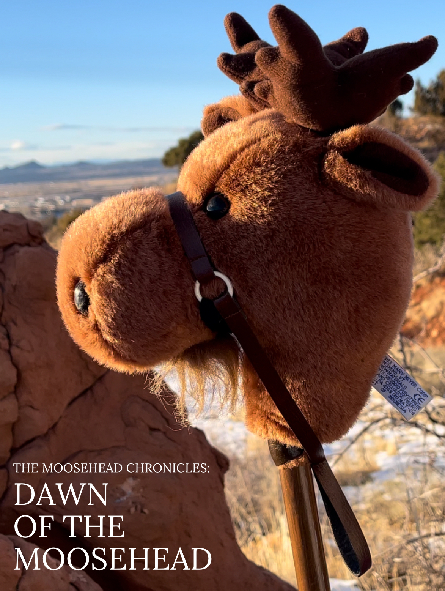

What is the Moosehead Chronicles?
The Moosehead Chronicles began in 2014 under the creative vision of six good friends as a short fun film to help pass the time on a slow summer day. However, overtime the Moosehead has taken on a life of it's own as it has been shared with family and friends over the years, ultimately leading to 5 movies (2 feature length), shorts, and countless good memories.
- There are 5 films in the filmography, listed below in their chronological order along with their (year of release)
- Dawn of the Moosehead (2025)
- Quest for the Moosehead (2014)
- Battle of the Moosehead (2014)
- Fate of the Moosehead (2018)
- Shadows of the Moosehead (2022)
- What are they about? Plot summaries of each:
- Dawn: With a famine weighing heavily on the kingdom of the Marnette, Andreas must find a solution quickly; meanwhile, a native boy is becoming disenfranchised from his tribe...
- Quest: Andreas must quickly race for the Moosehead before it falls into the wrong hands...
- Battle: Finding himself outcast, Andreas must rally the people and gather the moosehead to restore his glory.
- Fate: Weighed by the burden of the Moosehead, Andreas is forced to decide what is best for his people.
- Shadows: Living in the shadows of King Andreas, Pitt must learn to gain the people's trust and bring peace to the Marnette before it is too late.
- How else can I experience the Moosehead? While currently the Moosehead Chronicles only exists as films, either media that has been discussed or is currently under development includes:
- The Moosehead Chronicles: The Video Game
- The Moosehead Chronicles Novelization
- The Moosehead Chronicles: "The Moosical"
- The Merchandise of the Moosehead
- The Music of the Moosehead
- And it's sister franchise, "The Bear Butt"
- The Dances of the Moosehead video tutorials
The Moosehead on a Stick
The stunning Moosehead on a Stick, the object of desire (mockup poster)
Watch: "The Quest for the Moosehead"
Watch: "The Battle of the Moosehead"
Watch: "The Fate of the Moosehead"
Watch: "Shadows of the Moosehead"
Eventually, we hope to find the Moosehead Chronicles here:

Get in touch through Grant Wilkinson's page
Back to Top